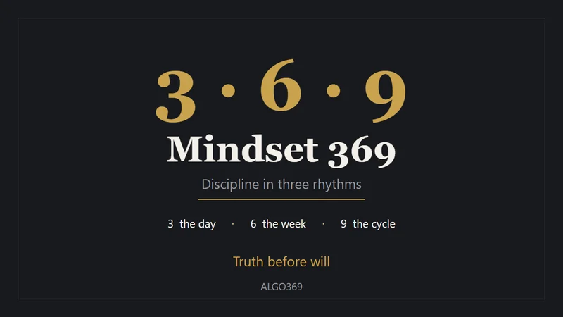
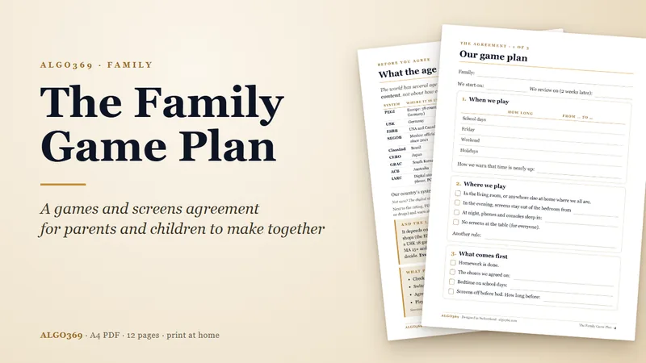
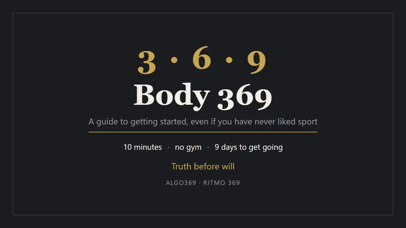

Start hereThe “Mindset 369” guide
The method in three rhythms (the day, the week, the cycle), the four traps and a page for the wall.
PDF · 4 pagesCHF 9Buy
We write about the home, well-being and the small decisions we all make every day.
We only recommend what we have used ourselves or can back up. When we don’t know something, we say so.
Only what exists and can be bought right now is listed here. When there is more, it will appear here – not before.
In English, there are three PDFs so far: the Mindset 369 guide, Body 369 and The Family Game Plan. Delivered instantly through Gumroad. If they are no use to you, write to us and we will refund your money.

Start hereThe method in three rhythms (the day, the week, the cycle), the four traps and a page for the wall.
PDF · 4 pages
NewFewer bans, more agreements. Parents and children decide together when, where and what is played, what happens online and how much can be spent inside games. The parents promise something too. Then they try it out for 2 weeks, with a chart to tick, and review it at the end. Includes the world’s age rating systems side by side (PEGI, USK, ESRB, ClassInd, CERO and others), when the rating is the law, and what PEGI, the USK and the ESRB advise parents, always with sources.
12-page A4 PDF · large font · print at home · children aged 8 to 16
NewFor anyone who doesn’t exercise or has stopped. 10 minutes a day, no gym: a 9-day kick-off and a 9-week plan, with printable sheets.
PDF · 15 pagesAll our other products are only available in Portuguese for now. You can find them in the Portuguese shop.
Long, unhurried pieces about things worth understanding properly, once.
Almost everyone who buys a monstera asks the same question a few months later: why are the new leaves coming out without any holes? The answer says a lot about the plant – and about the spot you have put it in.
These cuts are called fenestrations, and they are neither a defect nor a disease. There are two accepted explanations, and both have to do with where the plant comes from: the damp, shady floor of the tropical forests of southern Mexico, Guatemala and Panama. There, the monstera is not a pot plant but a climber that clings to tree trunks and grows towards the light. It can reach more than twenty metres in height.
The first explanation is light. Under a huge, solid leaf, everything is in the dark. Through the holes, light reaches the lower leaves of the same plant. The second is wind and rain: a leaf full of openings survives a tropical storm without tearing.
That leads to the practical part. If your monstera is producing small, solid leaves, it is almost always down to one of two things: too little light or nothing to climb. A moss pole changes how the plant looks more than any fertiliser.
And the aerial roots growing out of the stem are neither a problem nor dirt – that is how it holds on to trees. You can guide them into the soil in the pot.
About the name: Monstera comes from the Latin monstrum, because of the almost monstrous size of the leaves. Deliciosa refers to the fruit. It is edible and tastes like a mix of pineapple and banana – but only when it is fully ripe. Unripe, it irritates the mouth because of its calcium oxalate crystals. Indoors, in practice, a monstera almost never bears fruit.
It is one of the best-selling plants in the world and one of those that most often die at home – almost always for the same reason. And that reason is the opposite of what you might think.
Aloe vera comes from the Arabian Peninsula, from dry, stony ground. It has been cultivated for so long that it is hard to find truly wild: it has travelled with people for thousands of years. It appears on Sumerian clay tablets from around 2100 BC and in the Egyptian Ebers Papyrus, from around 1550 BC, which describes medicinal preparations.
The fleshy leaves are a reservoir. Inside, they hold a gel that is almost entirely water – that is how the plant gets through months without rain. The same gel has been used for centuries to soothe sunburn and minor skin irritation.
The most common mistake: treating it like other houseplants – watering once a week, good rich soil, a pot without a drainage hole. After three months, the leaves turn soft and glassy. That is not thirst but the opposite: the roots have rotted.
A practical tip few people know: under the green skin there is a yellow layer, the so-called latex or aloin, which tastes very bitter. What goes on the skin is the clear gel from the centre, not that layer.
And the story that Cleopatra used it is exactly that: a legend. There is no evidence for it. But it shows how long this plant has had a reputation.
It is the number printed large on the box, and the number almost everyone compares. It is also the number that tells you the least.
Watts measure consumption, not suction. The figure tells you how much electricity the appliance uses, not how much work it does with it. A badly designed 1200 W motor can suck worse than a well-designed 500 W one – the difference is lost as heat and noise.
Since 2017, this is no longer theory. European Regulation 666/2013 has since limited household vacuum cleaners to 900 W. Many people thought vacuum cleaners would become weak as a result. They didn’t: manufacturers had to improve the design instead of making the motor bigger.
The numbers worth looking for are different ones:
Air watts (AW) – measures suction power at the outlet, that is, after the losses in the tube and the nozzle. It is the closest to what you feel when you vacuum. In good cordless vacuums, it is between 100 and 250 AW.
Pascals (Pa) or kPa – measures the negative pressure the motor can create. Useful for comparing, but not enough on its own: lots of negative pressure with little airflow lifts fine dust and leaves the rest behind.
Airflow (litres per second) – this is what carries away the coarser dirt.
Suction only helps if the air can get through. A half-full bag, a dirty filter or a blocked tube drag down the performance of any appliance, however expensive it was. Cleaning the filter does more than changing the vacuum cleaner – and it is the maintenance almost nobody does.
One more word on comparing corded and cordless models: modern cordless vacuums win on convenience and lose on run time at the strongest setting. If your home is large, what matters is not the maximum suction but how many minutes the appliance lasts at that setting. That is usually much less than stated, because the stated figure refers to the weakest setting.
“HEPA” has become a kind of seal of quality and appears on things that have nothing to do with one another. It is worth knowing what the word means, because the meaning is precisely defined.
A true HEPA filter retains 99.97% of particles of 0.3 micrometres. That figure was not chosen at random, and the explanation surprises almost everyone.
It sounds contradictory, but it isn’t. Large particles hit the fibres and get stuck. Very small ones move erratically (Brownian motion) and so they also end up hitting a fibre. Particles of 0.3 µm slip best between the two effects – which is why the worst case is measured at this size. A filter that retains 99.97% in the worst case retains more of everything else.
Two traps when buying:
“HEPA-type” or “HEPA-like” is not HEPA. These expressions have no legal definition and can appear on a filter that retains 85%. The word that counts comes with a standard – in Europe, EN 1822, with classes from H13 upwards.
The filter is not the appliance. A good filter in an air purifier that barely moves any air cleans very little. What matters is the CADR (Clean Air Delivery Rate) in cubic metres per hour: it tells you how much clean air the appliance actually delivers. A 20 m² room with a normal ceiling height needs much more CADR than the box usually suggests.
And what a HEPA filter can’t do: remove gases and odours. It retains the particles in smoke, but the smell of smoke, volatile organic compounds and the smell of fresh paint are gases, not particles. For those you need activated carbon. That is a different filter, and it wears out faster.
If you suffer from allergies, you will notice the difference above all in the bedroom and at night. A good appliance in the right place does more than a huge appliance in the living room.
Some plants die because nobody looks after them. Lavender dies of the opposite – and that is why so many people give up after the first pot.
In the wild, it grows on the dry limestone slopes of the western Mediterranean: in Provence, in Catalonia, in the mountains of Italy. Poor soil, lots of stone, sun all day. The purple fields in the photos are cultivated, but the plant really does come from there.
Everything else follows from that. Rich, damp soil kills it. It usually goes like this: you buy lavender, plant it in good, dark compost from the bag and water it twice a week like the others – and after two months it turns grey in the middle and never recovers. That wasn’t thirst; it was root rot.
About the scent: it comes from essential oils held in tiny hairs on the surface of the leaves and flowers. For the plant, they are not perfume but protection against insects and heat. When you rub the leaves between your fingers, those hairs burst – which is why the scent stays on your hands.
The name also gives away what it was used for: it goes back to the Latin lavare, to wash. The Romans added lavender to bath water and to laundry. The gesture still lives in the name.
Something practical that changes how the plant looks after a few years: cut it back after flowering, but not into the old wood. Without this pruning, lavender turns woody from the bottom and gets straggly, and then there is nothing more to be done.
And if you have a balcony: a single plant changes how many bees come by. That is exactly why lavender honey has its own flavour.
Most houseplants that die don’t die of thirst. They die of too much water – almost always because someone decided to water “every Wednesday”.
The problem with the calendar: the plant doesn’t live by the calendar. The same plant drinks much more in July with the window open than in January with the heating on and short days. If you always water the same way, you are right for half the year and wrong for the other half.
It is simple and works for most houseplants. Two exceptions worth knowing:
Succulents, aloe and cacti – wait until the soil is completely dry, not just on the surface. In winter, weeks can go by without water.
Ferns and fine-leaved plants – want soil that is always slightly moist, but never waterlogged.
Signs of too much water: yellow, soft leaves, soil that smells musty, small flies around the pot. Signs of too little: limp but still firm leaves, soil pulling away from the edge of the pot.
The two are often confused because the leaves droop in both cases. You can feel the difference when you touch them: limp and soft means too much water; limp and dry means too little.
And the most important thing, which has nothing to do with watering: the pot needs a drainage hole. A decorative pot without drainage turns any correct watering into standing water around the roots. If you like the pot, use it as an outer pot – the plant stays in a plastic pot with holes and goes inside it.
We write them down here so that you can hold us to them.
We don’t say that something will change your life. We describe what it is, what it is good for and where it falls short.
If we haven’t tested something, we write that we haven’t tested it. If something is a legend and not a fact, we say so too.
If one day we earn a commission on a link, it will say so on the same page, in plain words.
We don’t publish discount codes, countdowns or offers that expire. That sells, but it doesn’t inform.
Topic suggestions, corrections or proposals – we reply to everything written by a person.